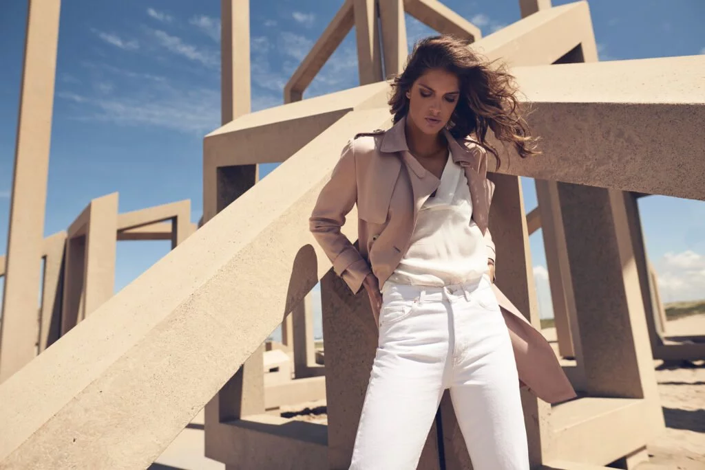

In HONOR OF GUCCIO GUCCI’S 138TH BIRTHDAY, CR RETURNS TO THE ROOTS OF THE ICONIC ITALIAN BRAND
Nadie NajmAbadi
8 october 2018
When the name Gucci comes to mind, most fashionphiles conjure the image of excess that Alessandro Michele has dreamed up in the last few years. Or perhaps they think of Tom Ford’s scandalous silhouettes and shocking ad campaigns. But long before marquee designers were running the show at Gucci, the fashion house got its start as a humble leather shop.Born on March 26, 1881 to a simple Italian leather goods maker, Guccio Gucci was a porter at the Savoy hotel in London when he first became enamored with the glamorous suitcases that the guests arrived with from all over the globe. Paying homage to his familiar roots, he eventually returned to his native Florence to work for Franzi, a tony luggage brand. Years later, Gucci was ready to strike out on his own, and in 1921 he opened his own eponymous leather goods store in Florence.In the beginning, Gucci’s main business was making saddles and other accessories for horseback riders, always crafted from the finest of Italian leathers. His designs continued to gain popularity as he expanded further into the world of accessories, with English aristocrats becoming major fans of the up-and-coming label. Even today this equestrian flair can be see in Gucci’s modern creations, including the beloved horse-bit detail, and the red and green woven stripe, inspired by saddle details.Guccio enlisted his three sons—Aldo, Vasco, and Rodolfo—to join the business in 1938, and they were tasked with expanding the brand’s presence, bringing Gucci to Rome and eventually Milan, in later years.
Leather was hard to come by in the mid-1930s, because of sanctions against Italy, so Gucci began experimenting with alternative textiles. This led to the very first signature Gucci print: small interconnected diamonds in dark brown, woven into a tan hemp fabric. The iconic Bamboo Bag was born under similar circumstances in 1947; Gucci artisans were scrambling to find materials towards the end of World War II and discovered that they could use Japanese bamboo to craft unique bag handles. Treated with a unique and patented method, these burnished bamboo handles became synonymous with Gucci. In 1953, just 15 days after Gucci’s first New York boutique opened its doors, Guccio passed away. But despite Guccio's untimely death, his brand continued to flourish and the Gucci's arrival in the U.S. was embraced by American consumers. The decade that followed was a golden era for Gucci, thanks to celebrities who began proudly sporting its designs. There was Elizabeth Taylor and Peter Sellers, who were both fans of unisex Gucci totes. Jackie Kennedy carried a slouchy Gucci purse in public and the bag was swiftly—and officially—renamed “The Jackie.” Grace Kelly stopped into a Gucci store to pick up a Bamboo Bag and as a token of his gratitude, Rodolfo Gucci asked Italian illustrator, Vittorio Accornero, to design a floral scarf for the beloved princess of Monaco. The resulting print became known as Flora, a Gucci signature that features 43 types of flowers, plants and insects, depicted through a vivid array of 37 colors.
In the ‘70s, Gucci looked to the East, putting down roots in Tokyo and then Hong Kong, but the golden era seemed to be over. The Gucci brothers were constantly fighting—even though the brand debuted their first ready-to-wear collection in 1981. At that point, Rodolfo’s son, Aritzio, had taken over and ousted his uncle Aldo—while bringing the house close to bankruptcy.But it was time to revive Gucci and that began with the appointment of Dawn Mello as creative director. The former president of Bergdorf Goodman joined the house in 1989 and brought with her a major team: Richard Lambertson as design director, Neil Barrett designing menswear and Tom Ford as the women’s ready-to-wear designer. Under Mello’s charge, the original Gucci loafer was reintroduced in a rainbow of colors to much fanfare. Sadly, much of the other designs were not well-received, and Mello returned to her cushy role at Bergdorfs in 1994.In fact, it’s Tom Ford that has been celebrated as Gucci’s actual savior—and rightly so. When he became Gucci’s creative director in the wake of Mello’s departure, the designer infused the brand with an overt sex appeal that at the time couldn’t be found on any other runway. The slinky slip dresses and sexy stilettos stood in stark contrast to the minimalist trend of the ‘90s and were totally embraced by consumers.
As his star rose, Ford brought with him the next generation of fashion
masterminds, including
Carine as his go-to stylist and Mario Testino as his preferred photographer. Together, the
trio revolutionized high fashion advertising with plenty of scandalous and skin-baring
images. Perhaps most famously, one ad showed a nearly-nude Carmen Kass showing a male model
the “G” she had shaved into her pubic hair. During Ford’s tenure, the term “sex sells” was
taken quite literally; Gucci’s boost in sales turned it into a $10 billion fashion
superstar.
But following a tussle with Pinault Printemps Redoute (the agency that purchased Gucci in
2004), Ford decided it was time to move on. And in what feels like a forgotten era in
Gucci’s timeline, Alessandra Facchinetti stepped in to take charge of the women’s
collections. She lasted only two unremarkable seasons before leaving the brand in 2005.
Her vacancy left room for Frida Giannini to step into the spotlight. She had been with Gucci
since 2002, when she was hired at the ripe age of 24 to become the director of handbags—a
sector that was a huge cash cow for Gucci. She was eventually promoted to oversee the entire
accessories category and Giannini’s massive success there primed her for the top job.
During her tenure at Gucci, Giannini abandoned Ford’s fixation on sex appeal,
instead turning her focus towards the distinct house codes. She seemed to be in
constant revival mode, revamping the iconic Flora print, putting her signature
on the red and green stripe and refreshing the Bamboo Bag.
There was a bit of drama during Giannini’s time. In 2011 she disclosed that she
had been secretly involved in a two-year relationship with Gucci’s CEO at the
time Patrizio di Marco—this came after plenty of juicy speculation surrounding
their rumored relationship. In 2013, the partners welcomed a daughter, Greta,
and eventually got married two years later.
Giannini’s time at Gucci was immortalized in The Director, a documentary that
followed Giannini around for 18 months. In fact, Alessandro Michele can be
spotted in the film, working as an associate director alongside his
predecessor—though he is nearly camouflaged in a low-key black suit. Giannini’s
approach kept fans and critics interested for a while. But her collections
eventually became mundane, so amid waning sales and lackluster reviews, she was
laid off. A few days later, di Marco was also ousted.
When Gucci announced that Michele would be taking over in 2015, it seemed as if he had been plucked from obscurity for such an important role. However, he had been working with the company for over 12 years and was ready to jump right in. For his first big move, Michele tossed Giannini’s final men’s collection and completely redesigned it just five days before the creations were seen on the Fall/Winter 2015 runway. One month later, his first womenswear collection bowed on the Milan runway and was instantly dubbed a smash success.After his appointment, Ford said of Michele: “He was a great handbag designer when he worked with me.” Michele has continued to live up to that reputation but has made his mark far beyond just great purses. In the four years since stepping up as creative director, Michele has turned Gucci into a maximalist dream with collections that seem to seep from his imagination onto an intricately designed runway. With crystals, ruffles, vibrant color schemes, baby dragons and fake heads, plus endless pop culture references and an innate understanding of social consciousness, Michele has returned Gucci to the “it” status it held under Ford. In fact, while in a state of forward-thinking and constant creation, Michele has still found a monumental way to pay homage to the brand’s storied past. Under his direction, Gucci Garden was created in Florence’s historic Palazzo della Mercanzia in 2018. Alongside Gucci Osteria da Massimo Bottura, a restaurant bedecked entirely in the brand’s wares and a boutique, is a museum that traces Gucci back to its beginning. Seen through Michele’s ornamented lens (and curated by Maria Luisa Frisa) the rich history of this Italian brand melds with the present, offering solid proof that there’s plenty more history to be written at Gucci.